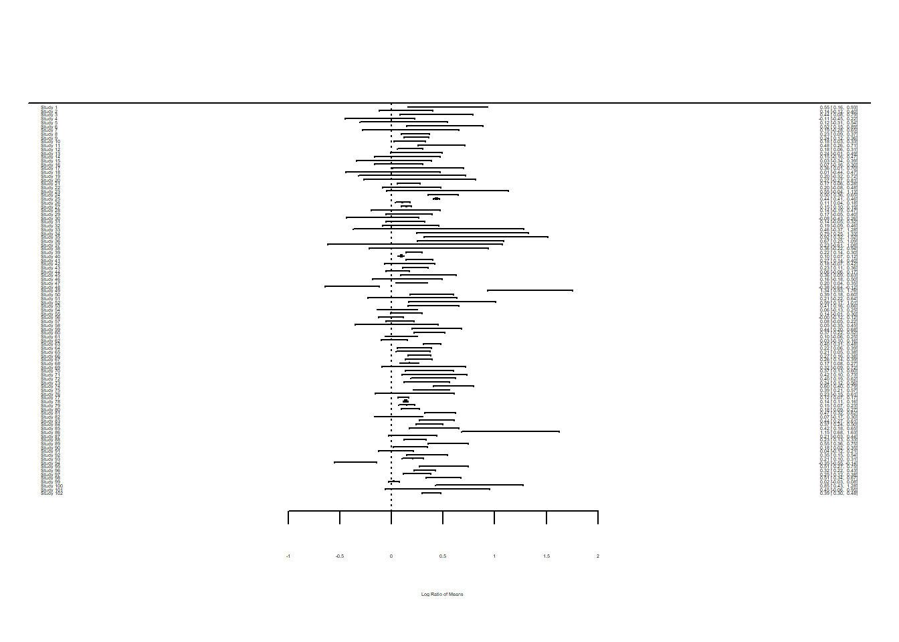
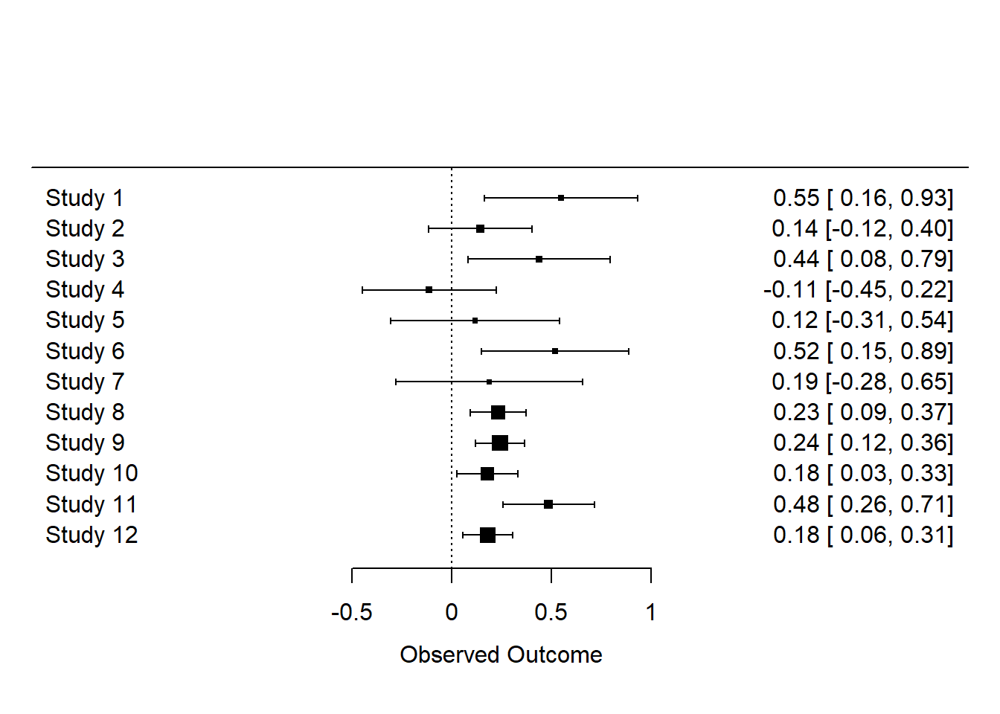
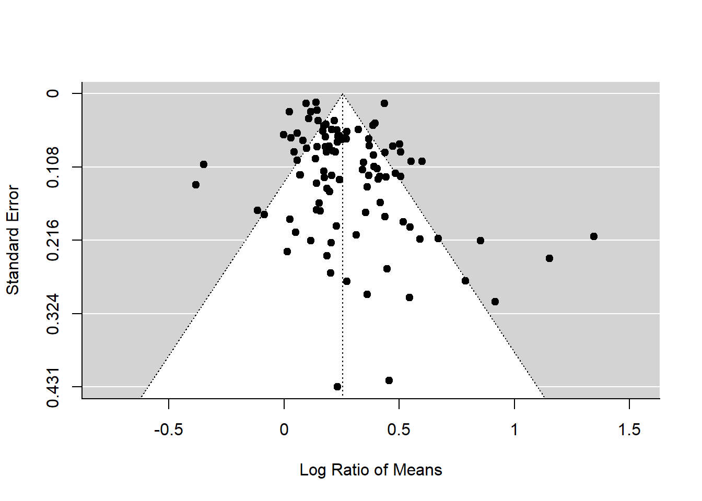
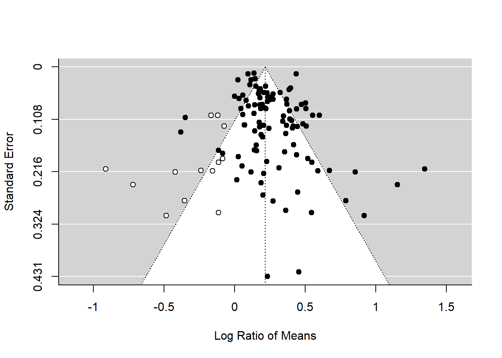

Meta-Analyses
1 Calculating effect sizes
![alt.text=Two diagrams. Left diagram has three silouhettes of insects above a graph with four horizontal lines with points in the middle of each labbelled female, male mixed sex and hermaphrodite. None of the four lines overlap the reference vertical dotted line. Right diagram has seven silouhettes of insects above a graph with four horizontal lines with points in the middle of each labbelled female, male mixed sex and hermaphrodite. On this graph all four lines overlap the reference vertical dotted line.](images/metanalysis.jpg)
The process of meta-analysis
There are many steps involve in a meta-analysis. For guidance on how to do a meta-analysis see (Nakagawa et al. 2017) which divides the process of meta-analysis into 10 questions.
This lesson only considers how to do the statistics part of the meta-analysis & publication bias.
1.1 Metafor
for meta-analysis
First, install and load the metafor package.
library(metafor)Have a look at the data set named dat.curtis1998
included in the package.
dat <- dat.curtis1998
str(dat)## 'data.frame': 102 obs. of 20 variables:
## $ id : int 21 22 27 32 35 38 44 63 86 87 ...
## $ paper : int 44 44 121 121 121 121 159 183 209 209 ...
## $ genus : chr "ALNUS" "ALNUS" "ACER" "QUERCUS" ...
## $ species : chr "RUBRA" "RUBRA" "RUBRUM" "PRINUS" ...
## $ fungrp : chr "N2FIX" "N2FIX" "ANGIO" "ANGIO" ...
## $ co2.ambi: num 350 350 350 350 350 350 350 395 350 350 ...
## $ co2.elev: num 650 650 700 700 700 700 700 795 700 700 ...
## $ units : chr "ul/l" "ul/l" "ppm" "ppm" ...
## $ time : int 47 47 59 70 64 50 730 365 365 365 ...
## $ pot : chr "0.5" "0.5" "2.6" "2.6" ...
## $ method : chr "GC" "GC" "GH" "GH" ...
## $ stock : chr "SEED" "SEED" "SEED" "SEED" ...
## $ xtrt : chr "FERT" "FERT" "NONE" "NONE" ...
## $ level : chr "HIGH" "CONTROL" "." "." ...
## $ m1i : num 6.82 2.6 2.99 5.91 4.61 ...
## $ sd1i : num 1.77 0.667 0.856 1.742 1.407 ...
## $ n1i : int 3 5 5 5 4 5 3 3 20 16 ...
## $ m2i : num 3.94 2.25 1.93 6.62 4.1 ...
## $ sd2i : num 1.116 0.328 0.552 1.631 1.257 ...
## $ n2i : int 5 5 5 5 4 3 3 3 20 16 ...This data set is from the paper by Curtis and Wang (1998). They looked at the effect of increased CO\(_2\) on plant traits (mainly changes in biomass). There is experimental details including species (sometimes called moderators) along with means (m), standard deviations (sd) and sample sizes (n) for the control group (1) and experimental group (2) in the last few columns.

1.2 Calculating ‘standardized’ effect sizes
To compare the effect of increased CO\(_2\) across multiple studies, we first need to calculate an effect size for each study - a metric that quantifies the difference between our control and experimental groups.
There are several ‘standardized’ effect sizes. When we have two groups to compare, we have a choice of two types of effect size statistics we could use. The first one is standardized mean difference (SMD also known as Cohen’s \(d\) or Hedge’s \(d\) or \(g\); there are some subtle differences between them, but we do not worry about them for now.Formula for calculating SMD
In the formula below:
* \(\bar{x}_{C}\) and \(\bar{x}_{E}\) are the means of the control
and experimental group, respectively
* \(sd\) is sample standard
deviation
* \(n\) is sample size
\[\begin{equation} \mathrm{SMD}=\frac{\bar{x}_{E}-\bar{x}_{C}}{\sqrt{\frac{(n_{C}-1)sd^2_{C}+(n_{E}-1)sd^2_{E}}{n_{C}+n_{E}-2}}} \end{equation}\]
Formula for calculating sample error variance
\[\begin{equation} se^2_{\mathrm{SMD}}= \frac{n_{C}+n_{E}}{n_{C}n_{E}}+\frac{\mathrm{SMD}^2}{2(n_{C}+n_{E})} \end{equation}\]
The square root of this is referred to as ‘standard error’. The inverse of this (the inverse of a number is when you divide 1 by it e.g.\(1/se^2\)) is used as ‘weight’ (studies with bigger sample sizes will have bigger ‘weight’ in the analysis)
Formula for lnRR
\[\begin{equation} \mathrm{lnRR}=\ln\left({\frac{\bar{x}_{E}}{\bar{x}_{C}}}\right) \end{equation}\]
Formula for lnRR
\[\begin{equation} se^2_\mathrm{lnRR}=\frac{sd^2_{C}}{n_{C}\bar{x}^2_{C}}+\frac{sd^2_{E}}{n_{E}\bar{x}^2_{E}} \end{equation}\]
We can get R to calculate these numbers for each study using the
function escalc() in metafor. To obtain the
standardised mean difference (SMD), we use:
# SMD
SMD <- escalc(
measure = "SMD", n1i = dat$n1i, n2i = dat$n2i,
m1i = dat$m1i, m2i = dat$m2i,
sd1i = dat$sd1i, sd2i = dat$sd2i
)Code Explained
Note: in the example dataset dat the columns for the
sample sizes, means and standard deviation have been given the same name
as the arguments that are used in escalc()
n1iandn2iare the sample sizesm1iandm2iare the meanssd1iandsd2ithe standard deviations from each study
The SMD object created has an effect size (yi) and its
variance (vi) for each study.
##
## yi vi
## 1 1.8222 0.7408
## 2 0.5922 0.4175
## 3 1.3286 0.4883
## 4 -0.3798 0.4072
## 5 0.3321 0.5069
## 6 2.5137 0.9282To obtain the alternative response ratio (lnRR), we would change the
measure =:
lnRR <- escalc(
measure = "ROM", n1i = dat$n1i, n2i = dat$n2i,
m1i = dat$m1i, m2 = dat$m2i,
sd1i = dat$sd1i, sd2i = dat$sd2i
)The original paper used lnRR so we will use it, but you will repeat the analysis in the Challenge below using SMD to see whether results are consistent.
Add the effect sizes to the original data set with
bind_cols from the package dplyr or
cbind
library(dplyr)
dat <- bind_cols(dat, lnRR)You should see yi (effect size) and vi (sampling variance) are added.
## 'data.frame': 102 obs. of 22 variables:
## $ id : int 21 22 27 32 35 38 44 63 86 87 ...
## $ paper : int 44 44 121 121 121 121 159 183 209 209 ...
## $ genus : chr "ALNUS" "ALNUS" "ACER" "QUERCUS" ...
## $ species : chr "RUBRA" "RUBRA" "RUBRUM" "PRINUS" ...
## $ fungrp : chr "N2FIX" "N2FIX" "ANGIO" "ANGIO" ...
## $ co2.ambi: num 350 350 350 350 350 350 350 395 350 350 ...
## $ co2.elev: num 650 650 700 700 700 700 700 795 700 700 ...
## $ units : chr "ul/l" "ul/l" "ppm" "ppm" ...
## $ time : int 47 47 59 70 64 50 730 365 365 365 ...
## $ pot : chr "0.5" "0.5" "2.6" "2.6" ...
## $ method : chr "GC" "GC" "GH" "GH" ...
## $ stock : chr "SEED" "SEED" "SEED" "SEED" ...
## $ xtrt : chr "FERT" "FERT" "NONE" "NONE" ...
## $ level : chr "HIGH" "CONTROL" "." "." ...
## $ m1i : num 6.82 2.6 2.99 5.91 4.61 ...
## $ sd1i : num 1.77 0.667 0.856 1.742 1.407 ...
## $ n1i : int 3 5 5 5 4 5 3 3 20 16 ...
## $ m2i : num 3.94 2.25 1.93 6.62 4.1 ...
## $ sd2i : num 1.116 0.328 0.552 1.631 1.257 ...
## $ n2i : int 5 5 5 5 4 3 3 3 20 16 ...
## $ yi : num 0.547 0.143 0.438 -0.113 0.117 ...
## ..- attr(*, "ni")= int [1:102] 8 10 10 10 8 8 6 6 40 32 ...
## ..- attr(*, "measure")= chr "ROM"
## $ vi : num 0.0385 0.0175 0.0328 0.0295 0.0468 ...1.3 Forest Plots
Forest plots are a common way of visualising the effect sizes and
their 95% confidence intervals, also known as CIs, (based on sampling
error variance) for each of the studies in the meta-analysis. The
forest() function can create this plot.
forest(dat$yi, dat$vi)
Unless you have a large screen, you may not be able to see the detail in this forest plot. Let’s look at just the first 12 studies.
forest(dat$yi[1:12], dat$vi[1:12])
We can calculate many different kinds of effect sizes with
escalc; other common effect size statistics include \(Zr\) (Fisher’s z-transformed correlation)
which you would use if the meta-analysis was analysing studies that
reported correlations oppose to comparing two groups.
Challenge
Do an internet search to find out how to interpret forest plots. What do the squares mean? Why is there a dotted line at 0? What does the diamond that you see on some forest plots represent?
Challenge
Now add the SMD values (the alternative ones to lnRR) to
dat and create a forest plot with them. Compare the two
forest plots.
Solution
add solution to adding SMD, noting the renaming R does and forest plot and how can view previous forest plot using arrows in plots area or by storing as an object and pointing out the differences.
2 Calculating the overall effect size
After calculating effect sizes, we can run statistical models to estimate mean effect size and the influence of moderator variables.
There are two main models for meta-analysis: 1) the fixed-effect model and 2) the random-effect model (actually there’s 3 types, but the third one is the extension of the second model). Because fixed effects mean something different in another statistical context, this naming is a bit confusing. So people now call the first model ‘common-effect’ model.
Section Q4 and Fig. 4 in Nakagawa et al. 2017 gives a longer explanation and visual representation of the different models.
2.1 Common-effect model
This model estimates the overall mean while considering weights. Weights are used so that different studies with smaller or larger sample sizes have less or more influence in the calculation of the overall effect size.
Common-effect model formula and explanation
\[\begin{equation} y_i=b_0+e_i, \\ e_i\sim \mathcal{N}(0,v_i), \end{equation}\]
where \(y_i\) is the \(i\)th effect size (from \(i\)th study), \(b_0\) is the overall mean (or meta-analytic mean), \(e_i\) is a deviation from the overall mean. \(e_i\) is equivalent to a normal distribution with a mean of 0 and variance of \(v_i\). \(v_i\) is the study specific sampling variance. Note that weights for this model are \(1/v_i\).
This model assumes that all the studies sampled from the same population and therefore there is a common mean for all studies. For example, all studies used the same species. This is rare in meta-analysis as the Curtis and Wang 1998 data shows where studies span many different species.
2.2 Random-effects model
A random-effect model does not make this assumption and therefore can be used when studies have been sampled from different populations.
Random-effect model formula and explanation
\[\begin{equation}
y_i=b_0+s_i+e_i,
\\
s_i\sim \mathcal{N}(0,\tau^2),\
\\
e_i\sim \mathcal{N}(0,v_i),\
\end{equation}\]e_i(0,v_i),
\end{equation}
where \(s_i\) is a study-specific deviation from the overall mean for \(i\)th study. As the second formula indicates, \(s_i\) is normally distributed with the between-study variance which is \(\tau^2\). Note that weights for this model are \(1/(\tau^2+v_i)\). We revisit this point.
Unlike the common-effect model, a random-effect model assumes that different studies have different population means.
2.3 Running a common-effect model
Let’s use the function rma from metafor to
run a common-effect model using the effect sizes yi and
variances vi we calculated earlier.
common_m <- rma(yi = yi, vi = vi, method = "FE", data = dat)We specify the effect size (yi), its variance (vi), the method (“FE” for fixed-effect) and the data frame (dat).
To see the output, use summary on the model object:
summary(common_m)##
## Fixed-Effects Model (k = 102)
##
## logLik deviance AIC BIC AICc
## -245.9580 769.0185 493.9160 496.5410 493.9560
##
## I^2 (total heterogeneity / total variability): 86.87%
## H^2 (total variability / sampling variability): 7.61
##
## Test for Heterogeneity:
## Q(df = 101) = 769.0185, p-val < .0001
##
## Model Results:
##
## estimate se zval pval ci.lb ci.ub
## 0.2088 0.0054 38.3374 <.0001 0.1982 0.2195 ***
##
## ---
## Signif. codes: 0 '***' 0.001 '**' 0.01 '*' 0.05 '.' 0.1 ' ' 1The overall mean is statistically significant (under
Model Results look at pval). This indicates it
is significantly different from 0 and therefore there is an effect of
the CO\(_2\) treatment on plant
biomass.
The overall mean is under estimate and it’s around 0.2.
What does 0.2 mean? The effect sizes were response ratios on a
logarithmic scale (lnRR). We can use exp() to convert this
back into a response ratio of the control and experimental means.
exp(0.2)## [1] 1.221403We can say that the plant trait (i.e. biomass) was 22% larger in the experimental group (RR\(=\bar{x}_{E}/\bar{x}_{C}\)), which seems like a pretty large effect (remember to interpret results in a biological meaningful way).
2.3.1 Running a random-effects model
Now, we move onto the random-effects model - a more realistic model
because these studies were on different species. Again, we use the
rma function, but this time change the method to REML which
is the default and the best method for the random-effect
meta-analysis.
random_m <- rma(yi = yi, vi = vi, method = "REML", data = dat)
summary(random_m)##
## Random-Effects Model (k = 102; tau^2 estimator: REML)
##
## logLik deviance AIC BIC AICc
## 7.0449 -14.0898 -10.0898 -4.8596 -9.9674
##
## tau^2 (estimated amount of total heterogeneity): 0.0262 (SE = 0.0053)
## tau (square root of estimated tau^2 value): 0.1619
## I^2 (total heterogeneity / total variability): 88.90%
## H^2 (total variability / sampling variability): 9.01
##
## Test for Heterogeneity:
## Q(df = 101) = 769.0185, p-val < .0001
##
## Model Results:
##
## estimate se zval pval ci.lb ci.ub
## 0.2553 0.0198 12.8899 <.0001 0.2165 0.2941 ***
##
## ---
## Signif. codes: 0 '***' 0.001 '**' 0.01 '*' 0.05 '.' 0.1 ' ' 1Compare the overall mean from this model with the common-effect model. Oh, the overall mean of the random-effects model is actually bigger than that of the fixed-effect model! OK, that sometimes happens (we will find out that this probably is an over-estimation later in the publication bias section).
We expect the 95% CI (under ci.lb and
ci.ub) to be wider (i.e. more realistic) in this
random-effects model as this model has a better assumption than the
common-effect model.
2.4 Understanding heterogeneity
There are other numbers in the output. We have tau^2
(\(\tau^2\)) and I^2
(\(I^2\)), two very common measures of
heterogeneity (note that H^2, or \(H^2\) is a transformation of \(I^2\)).
Heterogeneity is variation in effect sizes, which is not accounted for by the sampling error variance/random chance. In other words, how consistent the results are across all the studies. This is real variation in the data.
\(I^2\) is an important index as it can tell the percentage of real variation in your meta-analytic data.
Formula for \(I^2\)
\[\begin{equation} I^2=\frac{\tau^2}{(\tau^2+\bar{v})}, \end{equation}\]
where \(\bar{v}\) is a representative value of \(v_i\) (or think \(\bar{v}\) as the average of \(v_i\) although it is not quite it). Note that the denominator is the whole variance which exists in the data.
The benchmark values for \(I^2\) are 25, 50 and 75% for low, moderate and high heterogeneity, respectively (Higgins et al., 2003.)
Our \(I^2\) value is 88.9% so very
high. The output also shows a Test for Heterogeneity or a
\(Q\) test. As you might expect, \(I^2\) is statistically significant meaning
there is heterogeniety.
Senior et al. 2016 did a meta-analysis of meta-analyses looking at what is the average value of \(I^2\) in the field of ecology and evolution. The average value was 92%! This indicates that we usually need to fit the random-effects model rather than the common-effect model because the latter assumes heterogeneity to be zero or \(\tau^2=0\) and \(I^2 = 0\). Or is it really? We find this out later.
2.5 Meta-regression (the random-effects model)
The existence of heterogeneity sets a scene for meta-regression. This means that we now put predictors (‘moderators’ in the meta-analytic terminology) into our model to explain heterogeneity (equivalent to normal regression models).
In this example, let’s fit three moderators that were collected by
the authors: 1) time (how long the experiment was), 2)
method (different ways of increasing CO\(_2\)), and 3) fungroup
(functional group, i.e., angiosperm, gymnosperm or N\(_2\) fixer).
We use rma() again, but add a model statement.
metareg <- rma(yi = yi, vi = vi, mod = ~ time + method + fungrp, method = "REML", data = dat)
summary(metareg)##
## Mixed-Effects Model (k = 102; tau^2 estimator: REML)
##
## logLik deviance AIC BIC AICc
## 5.1938 -10.3876 3.6124 21.5628 4.8851
##
## tau^2 (estimated amount of residual heterogeneity): 0.0267 (SE = 0.0056)
## tau (square root of estimated tau^2 value): 0.1634
## I^2 (residual heterogeneity / unaccounted variability): 87.16%
## H^2 (unaccounted variability / sampling variability): 7.79
## R^2 (amount of heterogeneity accounted for): 0.00%
##
## Test for Residual Heterogeneity:
## QE(df = 96) = 658.4083, p-val < .0001
##
## Test of Moderators (coefficients 2:6):
## QM(df = 5) = 2.9089, p-val = 0.7140
##
## Model Results:
##
## estimate se zval pval ci.lb ci.ub
## intrcpt 0.3043 0.0516 5.8934 <.0001 0.2031 0.4055 ***
## time -0.0001 0.0001 -1.0509 0.2933 -0.0002 0.0001
## methodGH -0.0369 0.0567 -0.6501 0.5157 -0.1481 0.0743
## methodOTC 0.0308 0.0902 0.3410 0.7331 -0.1461 0.2076
## fungrpGYMNO -0.0454 0.0605 -0.7501 0.4532 -0.1640 0.0732
## fungrpN2FIX 0.0044 0.1701 0.0258 0.9794 -0.3291 0.3379
##
## ---
## Signif. codes: 0 '***' 0.001 '**' 0.01 '*' 0.05 '.' 0.1 ' ' 1Look at the $R^2$ value - the moderators do not explain
anything! Also, the Test of Moderators (again the Q value)
say they are not significant. A terrible model! So we give up here (in a
real meta-analysis, you need to do this more systematically, preferably
based on your priori hypotheses).
2.6 Checking for publication bias
It seems like an CO\(_2\) increase promotes plant growth, but this is assuming the data set we have does not suffer from publication bias.
Publication bias in its simplest form is that significant results are more likely to be published than non-significant results
There are several methods people use to assess if there is publication bias. Two commonest methods, often used as a set, are: 1) funnel plot, which one uses to detect a funnel asymmetry (a sign of publication bias), and 2) Egger’s regression test with which you test funnel asymmetry statistically.
2.7 Funnel plot
To create a funnel plot:
funnel(random_m)
The x axis is effect size. The overall effect size is plotted as a dotted vertical line. Each point shows a study’s effect size and standard error on the y axis. Note the y axis has 0 at the top.
What am I talking about by ‘funnel asymmetry’? We expect to see a symmetrical up-side-down funnel, where effect sizes with low \(se\) are more tightly clustered than effect sizes with high \(se\). But if we have publication bias, we should see funnel asymmetry. This is because studies with small sample sizes (i.e. high \(se\), which leads to non-significance) are less likely to be published.
2.8 Egger’s test
To run Egger’s test:
# Note that the orignal Egger's test is regtest(random_m, model="lm")
regtest(random_m)##
## Regression Test for Funnel Plot Asymmetry
##
## Model: mixed-effects meta-regression model
## Predictor: standard error
##
## Test for Funnel Plot Asymmetry: z = 3.2046, p = 0.0014
## Limit Estimate (as sei -> 0): b = 0.1584 (CI: 0.0890, 0.2278)The Egger’s test p value is significant suggesting asymetry. But we need to be careful. Funnel asymmetry can be caused not only by publication bias, but also by heterogeneity (one or more undetected moderators are distorting a funnel shape). Given we have a lot of unexplained variance (i.e. heterogeneity), we cannot be sure what is causing this asymmetry.
2.9 Trim-and-fill
We can use the alternative trim-and-fill method through the function
trimfill(). We get a funnel plot by passing the result
through funnel()
tf_m <- trimfill(random_m)
tf_m##
## Estimated number of missing studies on the left side: 13 (SE = 6.5629)
##
## Random-Effects Model (k = 115; tau^2 estimator: REML)
##
## tau^2 (estimated amount of total heterogeneity): 0.0421 (SE = 0.0076)
## tau (square root of estimated tau^2 value): 0.2053
## I^2 (total heterogeneity / total variability): 92.06%
## H^2 (total variability / sampling variability): 12.59
##
## Test for Heterogeneity:
## Q(df = 114) = 872.7669, p-val < .0001
##
## Model Results:
##
## estimate se zval pval ci.lb ci.ub
## 0.2166 0.0227 9.5234 <.0001 0.1721 0.2612 ***
##
## ---
## Signif. codes: 0 '***' 0.001 '**' 0.01 '*' 0.05 '.' 0.1 ' ' 1funnel(tf_m)
As you can see this method uses the asymmetry to add more points and provide a revised overall mean, which is smaller than that of the original random-effect model. Although this effect is still significant, this method could turn a significant overall mean into a non-significant one. But rather than taking this as a real estimate of the overall mean, we need to see this as a part of our sensitivity analysis.
Sensitivity analyses involve various statistical methods that test how the overall effect size changes depending on the decisions made during the meta-analysis. These decisions will have affected what studies and data was included in the calculation.
There are more methods for publication bias tests, none of which are perfect, but it is important to do some of these tests (for more see Nakagawa et al., 2017 and references therein).
2.10 Further help and references
Worked examples on the metafor package’s website. There you’ll find many worked examples.
Curtis, P. S., and X. Z. Wang. 1998. A meta-analysis of elevated CO2 effects on woody plant mass, form, and physiology. Oecologia 113:299-313.
Nakagawa, S., R. Poulin, K. Mengersen, K. Reinhold, L. Engqvist, M. Lagisz, and A. M. Senior. 2015. Meta-analysis of variation: ecological and evolutionary applications and beyond. Methods in Ecology and Evolution 6:143-152.
Viechtbauer, W. 2010. Conducting meta-analyses in R with the metafor package. Journal of Statistical Software 36:1-48.
2.10.1 Further help (references)
Henmi, M., and J. B. Copas. 2010. Confidence intervals for random effects meta-analysis and robustness to publication bias. Statistics in Medicine 29:2969-2983.
Higgins, J. P. T., S. G. Thompson, J. J. Deeks, and D. G. Altman. 2003. Measuring inconsistency in meta-analyses. British Medical Journal 327:557-560.
Nakagawa, S., D. W. A. Noble, A. M. Senior, and M. Lagisz. 2017. Meta-evaluation of meta-analysis: ten appraisal questions for biologists. BMC Biology 15:18.
Senior, A. M., C. E. Grueber, T. Kamiya, M. Lagisz, K. O’Dwyer, E. S. A. Santos, and S. Nakagawa. 2016. Heterogeneity in ecological and evolutionary meta-analyses: its magnitude and implications. Ecology 97:3293-3299.
Challenge
Carry out a meta-analysis. Collect the data as a class with each person using one of the papers below to pull out the information needed to fill in each of the columns in a class excel sheet.
Then individually run a meta-analysis on the data.
List of papers from a meta analysis paper, check each paper.
Adapted from EnvironmentalComputing.Authors: Shinichi Nakagawa and Malgorzata (Losia) Lagisz